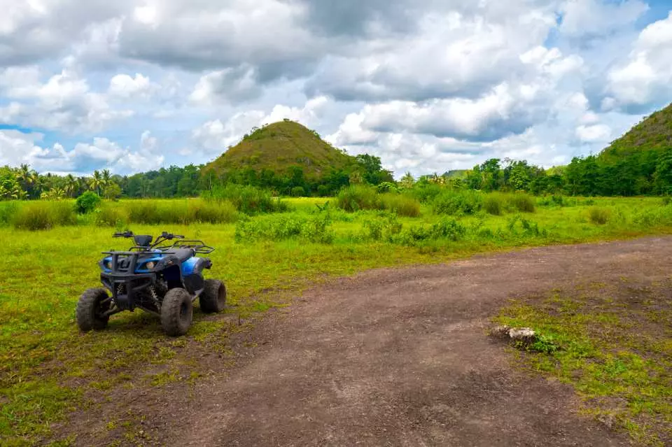
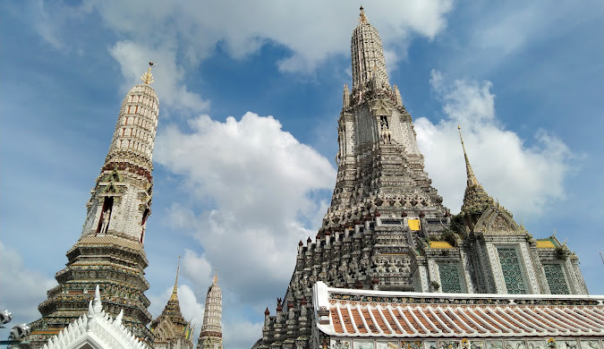
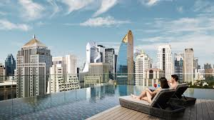

Philippines
The Philippines is an archipelago of over 7,000 islands in Southeast Asia. Known for its beautiful beaches, vibrant festivals, and warm hospitality, it's a tropical paradise for tourists.
- Boracay Islands
- Known for its pristine white-sand beaches and crystal-clear waters, Boracay offers water sports, vibrant nightlife, and relaxation.
- Palawan
- Home to the stunning El Nido and Coron, Palawan is famous for its limestone karst formations, hidden lagoons, and underwater shipwrecks for snorkeling and diving.
- Chocolate Hills, Bohol
- These unique cone-shaped hills change color in the dry season, resembling chocolate. They are a natural wonder and a popular attraction in Bohol.



Japan


Japan is an island nation in East Asia, famous for its blend of ancient traditions and modern innovations. It offers a mix of historic sites, stunning natural landscapes, and vibrant cities.
- Kyoto
- Famous for its historic temples, traditional tea houses, and beautiful gardens, Kyoto is a cultural treasure and the epitome of Japan's rich heritage.
- Mount Fuji
- This iconic volcano is a symbol of Japan and a favorite spot for hikers and photographers. It offers breathtaking views from its summit.
- Tokyo Disneyland and DisneySea
- These theme parks provide a magical experience with a blend of Disney and Japanese culture, making them a popular choice for families.


Thailand

Thailand is a Southeast Asian country known for its rich culture, stunning temples, and beautiful landscapes. It's a popular destination for beach lovers, adventure seekers, and food enthusiasts.
- Bangkok
- The vibrant capital city is known for its bustling street markets, ornate temples like Wat Pho, and a lively street food scene.
- Chiang Mai
- Located in Northern Thailand, Chiang Mai is famous for its historic old city, night bazaars, and as a hub for exploring the surrounding mountains and hill tribes.
- Phuket
- Thailand's largest island is a beach lover's paradise with beautiful resorts, water activities, and a lively nightlife scene.

